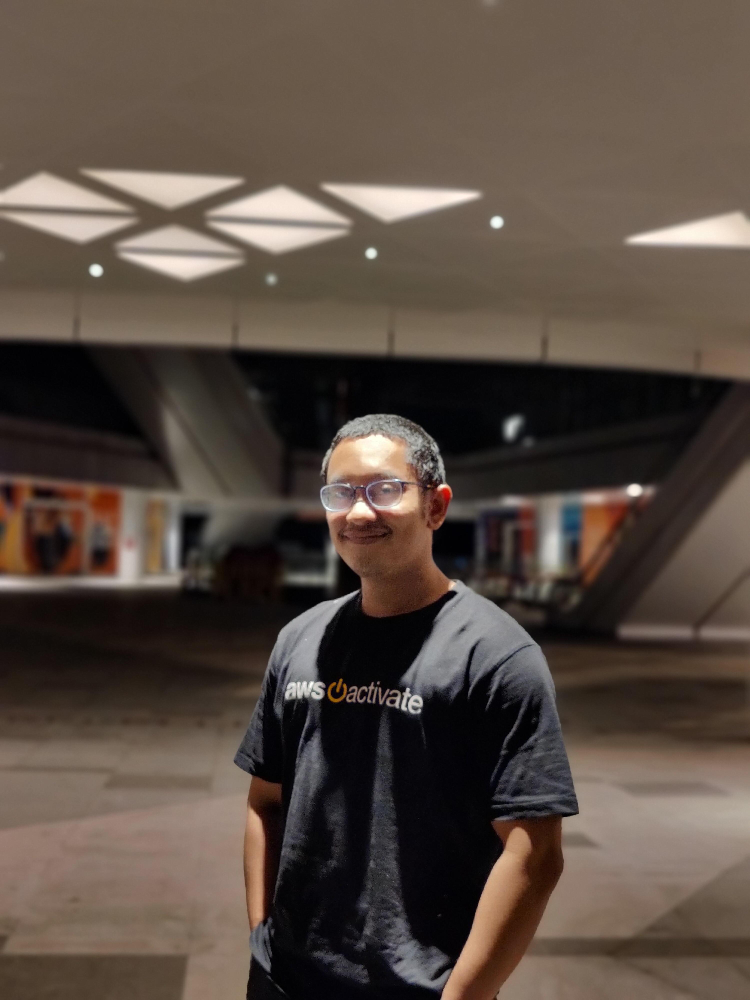

Zulamir Sofian
Motivated and customer-oriented professional with a strong background in customer experience and hospitality. Experienced in assisting buyers, ensuring prompt responses to inquiries, and coordinating order fulfillment. Skilled at analyzing data for accuracy and serving as a main point of contact for clients. Proven ability to deliver exceptional service and ensure customer satisfaction.
Demonstrated success as a Senior Space Executive, coordinating the seamless transition of clients into coworking spaces, maintaining facility conditions, and facilitating access card migrations. Proficient in providing IT support and onboarding new members. Experienced in managing applicants and facilitating the migration of coworking space platforms. Strong problem-solving skills and a collaborative approach to team environments.
Delivered exceptional customer service, attending to members' needs and ensuring high satisfaction levels. Effectively handled inquiries and promptly resolved complaints from members and guests. Played a key role in the successful pre-opening of a new outlet at Surian Tower (Group M) and efficiently managed event logistics. Maintained an up-to-date database of existing members while registering new members and guests. Possessing strong organizational skills and attention to detail, I actively contributed to a seamless and welcoming coworking space experience
WORK IN PROGRESS